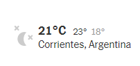
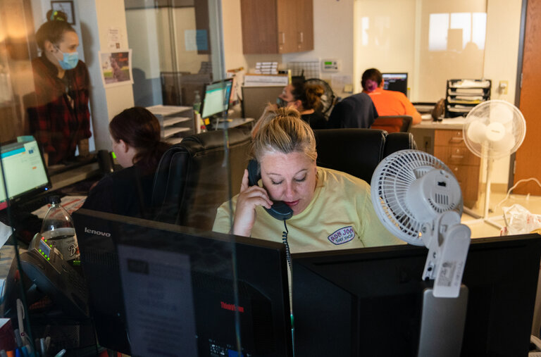

30 de Septimebre de 2021

|
30 de Septimebre de 2021 |
|
|
Angustia del Regreso Cinco años del acuerdo de paz en Colombia, una deuda pendiente en Honduras, la partida de Merkel y más. |
Suscribirse a El Times Suscribite para recibir por correo el boletín gratuito de The New York Times en español. |  |

‘¿Qué vamos a hacer?’: mujeres con embarazos no deseados recorren distancias largas para abortarLa nueva legislación en Texas ha tenido efectos profundos: algunas mujeres han optado por viajar a otros estados, como Oklahoma, para someterse al procedimiento. 7 h Por Sabrina Tavernise |
La astrología no puede salvar al mundo. Pero me sirve para estar bien Después de pasar por el desastre del huracán María, me resguardé en la astrología para sobrellevar la incertidumbre. Y me di cuenta de que este arte adivinatorio es un lenguaje que nos puede acercar colectivamente. Hace 1 d Por JULIE TURKEWITZ y FEDERICO RIOS |
Las mascarillas funcionan.Las pruebas de nuestras investigaciones son contundentes Uno de los estudios más exhaustivos a la fecha muestra que los cubrebocas funcionan.. Hace 12 h Por Por JASON ABALUCK, LAURA H. KWONG y STEPHEN P. LUBY ‘Las cosas se pusieron muy difíciles’: los haitianos en Chile siguen migrando a EE. UU. Muchas de las personas de Haití que ingresaron recientemente a Texas se habían refugiado durante años en Chile. Algunos dijeron que tuvieron que irse del país sudamericano por el aumento del desempleo, la pobreza y la hostilidad. Hace 8 hPor PASCALE BONNEFOY y CRISTOBAL OLIVARES |
escrito por Cicero en el 45 antes de Cristo "At vero eos et accusamus et susto odio dignissimos ducimus qui blanditiis praesentium voluptatum deleniti atque corrupti quos dolores et quas molestias excepturi sint occaecati cupiditate non provident, similique sunt in culpa qui officia deserunt mollitia animi, id est laborum et dolorum fuga.
Et harum quidem rerum facilis est et expedita distinctio. Nam libero tempore, cum soluta nobis est eligendi optio cumque nihil impedit quo minus id quod maxime placeat facere possimus, omnis voluptas assumenda est, omnis dolor repellendus.
Temporibus autem quibusdam et aut officiis debitis aut rerum necessitatibus saepe eveniet ut et voluptates repudiandae sınt et molestine non recusandae. Itaque earum rerum hic tenetur a sapiente delectus, ut aut reiciendis voluptatibus maiores alias consequatur aut perferendis doloribus asperiores repellat.
Temporibus autem quibusdam et aut officiis debitis aut rerum necessitatibus saepe eveniet ut et voluptates repudiandae sint et molestiae non recusandae. Itaque sarum rerum hic tenetur a sapiente delectus, ut aut reiciendis voluptatibus maiores alias consequatur aut perferendis doloribus asperiores repellat.